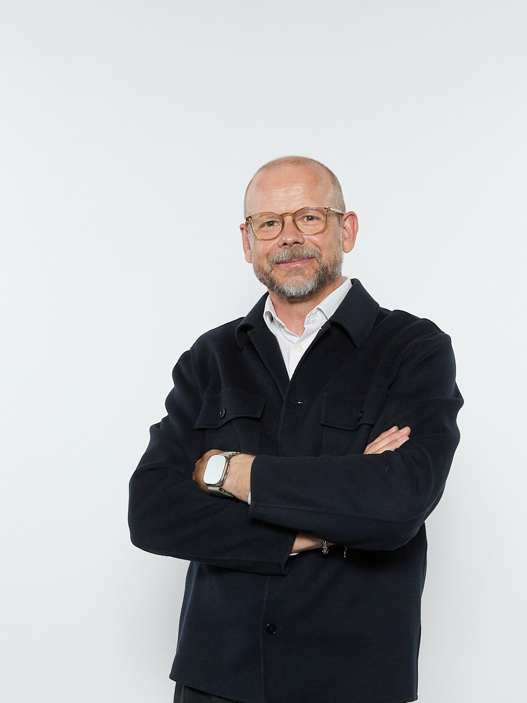
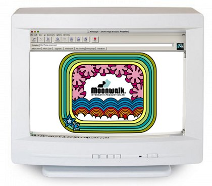
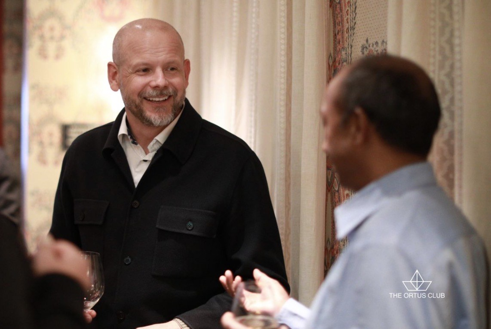
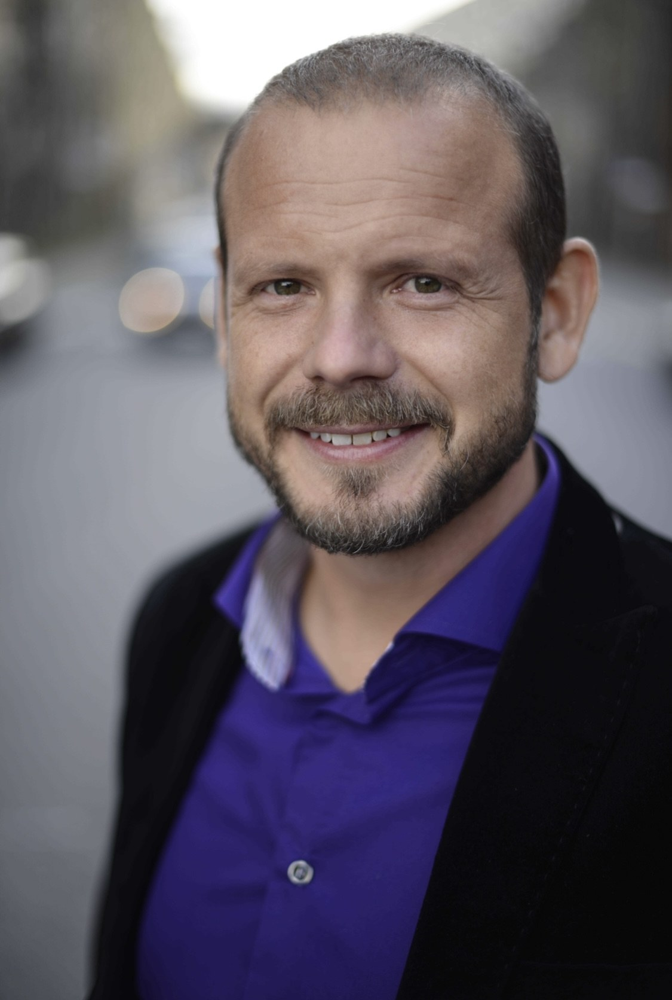

25
Valtech
Executive Director — Strategy & Consulting
Leading strategy work with clients across industries, combining business, technology and human experience.
Strategy · Technology · New Business
For more than 20 years I've worked at the intersection of business, technology and people — building companies, products, teams and new businesses.

My career has never followed a completely straight line. I've been an entrepreneur, strategist, designer, investor, innovation leader and product leader.
What connects the different chapters is a curiosity about what happens when a good idea meets technology, people and a real business opportunity.
Career
From startups to telecom, from strategy to product. Different contexts, the same drive — to find problems worth solving and turn ideas into impact.
Executive Director — Strategy & Consulting
Leading strategy work with clients across industries, combining business, technology and human experience.
Head of Strategy & New Product, Division X
Built and led product strategy and new ventures. Launched Telia Smart Drones and Telia Crowd Insights.
Head of Innovation Lab, Telia Division X
Built and led an innovation lab from scratch, introducing lean experimentation and testing 50+ concepts per year.
Managing Director
Built and ran a 50 MSEK venture fund. Central to the strategy and investment model, investment decisions and portfolio growth.
Chief Business Director / Senior Strategist / Partner
Led strategy, product and service design work for major clients including Telia, SAS, Fortum and Länsförsäkringar.
Co-founder / Digital Strategist
My first company. Built one of Sweden's early successful web agencies, growing to 18 employees and 20 MSEK turnover in three years.


About
My professional background spans entrepreneurship, digital strategy, service design, venture investment, innovation and product development.
I've worked in startups, agencies, investment, telecom and consulting — often in situations where new tech and new behaviors needed to be figured out and, new solutions built.
I currently work as Executive Director — Strategy & Consulting at Valtech in Stockholm.
LinkedIn ↗
Beyond the job title
I like understanding how things work — and then building products that are truly valuable and businesses that scale. That curiosity follows me well beyond work.
Get in touch
I'm always interested in conversations about strategy, technology, new business and transformation.
Get in touch →